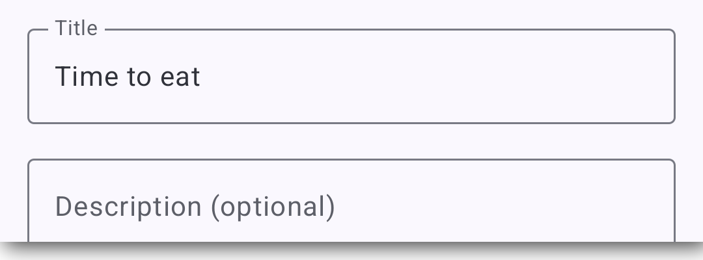
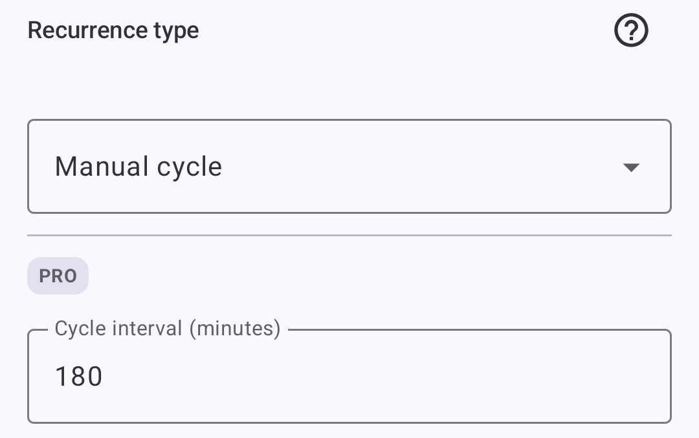
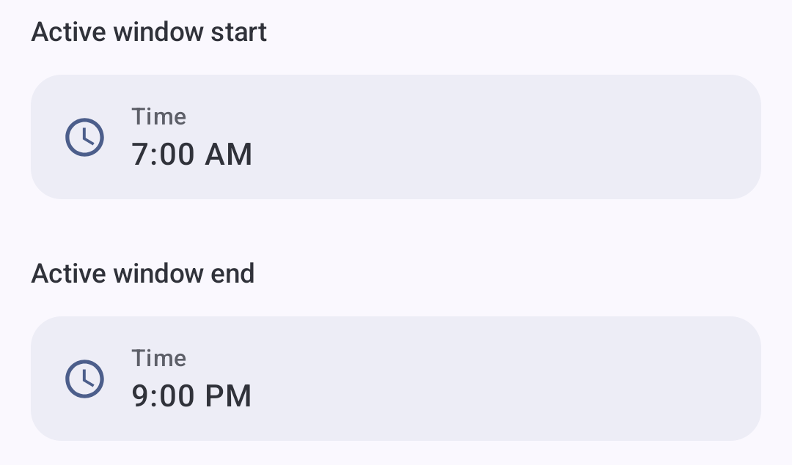
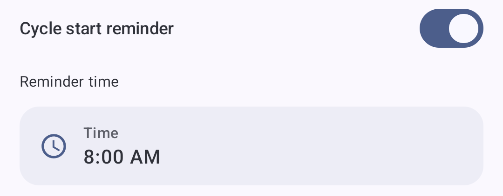

Practical example
Meal reminders throughout the day
ProSet up meal reminders once and start the daily sequence when it suits your routine. DKReminder will let you know when it is time for the next meal.
Why it helps
Meal reminders that start on your schedule
Set the interval that fits your routine. Start the daily sequence when your first meal begins. The next day, you can start at a different time without changing the setup.
How to set it up
One reminder, four steps
-
1
Name it “Time to eat”
Use a title that will be immediately clear when the alert appears.

-
2
Choose Manual cycle and set 180 minutes
This mode waits until you start the day's sequence. The interval is demonstration data, not a recommendation.

-
3
Choose when reminders can arrive
Set Active window to 07:00–21:00. The next reminders will arrive only during this time range.

-
4
Turn on a start reminder for 08:00
DKReminder quietly prompts you to begin. Tap Start with your first meal, or Remind me later if you are not ready. After you start, the next reminders arrive at your chosen interval.

Tap “Start” to begin today’s reminder cycle
How it behaves
The same rule can start at a different time
Both days use the same demonstration settings: a 180-minute interval and an active window ending at 21:00.
Day 1 · Start at 08:15
- 08:15Start
- 11:15Alert
- 14:15Alert
- 17:15Alert
- 20:15Alert
Day 2 · Start at 10:00
- 10:00Start
- 13:00Alert
- 16:00Alert
- 19:00Alert
- 22:00Outside the window
Expected behavior
What DKReminder will do
The quiet prompt offers Start or Remind me later. The daily sequence begins only after you choose Start.
The first alert comes after the selected interval, not at the moment you press Start.
New planned alerts stop when the next time would fall outside the active window.
You start a new daily cycle yourself when the next day’s routine begins.
What is important to know
Manual cycle is a DKReminder Pro feature. DKReminder helps follow a routine you already chose; it does not advise how often to eat and does not promise health or weight outcomes.
Read how the manual cycle works in HelpSet a reminder around your own routine.
Choose the values that fit you, then let DKReminder keep track of the next signal.